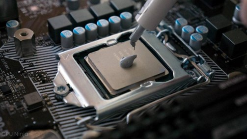

Datum objave: 5/6/2022
Materijal za prijenos topline koristi se pri ugradnji bilo koje rashladne otopine. Kada ljudi razmišljaju o termalnoj pasti u kontekstu izrade računala, vjerojatno misle na proces instaliranja CPU hladnjaka. Kada kupite grafičku karticu, na primjer, termalno rješenje je već integrirano. S CPU hladnjakom imate mogućnost odabrati onaj koji želite, ali to znači da ćete ga obično morati sami instalirati.
Iako metalna baza CPU hladnjaka i površina CPU-a izgledaju glatko, ove metalne ploče imaju mikroskopske nedostatke koji mogu rezultirati lošim prijenosom topline. Dvije površine nisu u punom kontaktu zbog tih nesavršenosti, pa termalna pasta ispunjava te zračne praznine, omogućujući učinkovitiji prijenos topline. Jednostavno rečeno, termalna pasta pomaže vašem CPU hladnjaku da obavi svoj posao, a hladnjak koji ispravno radi i ne postiže prevelike temperature znači manje potencijalnih problema s performansama.
Prije početka pročitajte sve relevantne upute. To uključuje one koje dolaze s vašim CPU hladnjakom i termalnom pastom.
Nanesite termalnu pastu na središte gornje površine CPU-a. Ako već imate termalnu pastu prethodno nanesenu na novi hladnjak, možete preskočiti ovaj korak. Trebate nanijeti malu količinu — otprilike veličine zrna graška — na sredinu integriranog raspršivača topline, odnosno gornje površine procesora.
Instalirajte CPU hladnjak. Koristite lagani pritisak odozgo prema dolje da postavite osnovnu ploču ili vodeni blok vašeg hladnjaka na CPU i držite taj pritisak dok pričvršćujete hladnjak na mehanizam za montažu. Trebat ćete upotrijebiti dovoljno sile da hladnjak ne klizi i da ravnomjerno rasporedite termalnu pastu. Pri tome treba paziti da ne pritisnete presnažno da nagnete matičnu ploču ili oštetite CPU. Nemojte do kraja zategnuti vijke za montažu dok ne pričvrstite sva četiri, a zatim ih okrenite nekoliko puta prije nego što prijeđete na sljedeći kako biste osigurali ravnomjeran pritisak
Još jednom provjerite svoj rad. Nakon što je temeljna ploča ili vodeni blok CPU hladnjaka čvrsto pričvršćena, provjerite svoj rad kako biste bili sigurni da sve izgleda ispravno. Ne smije se prelijevati termalna pasta preko rubova CPU-a ili bilo gdje na matičnoj ploči. Ako postoji, to znači da ste upotrijebili previše paste i trebali biste je očistiti alkoholom i ponovno pokrenuti postupak. Ako sve izgleda čisto i hladnjak se ne pomiče kada ga dodirnete, uspješno ste primijenili termalnu pastu i montirali hladnjak.
Još informacija o termalnim pastama i njenim pravilnim primjenama možete pronaći u članku CPUTEMPER-a.